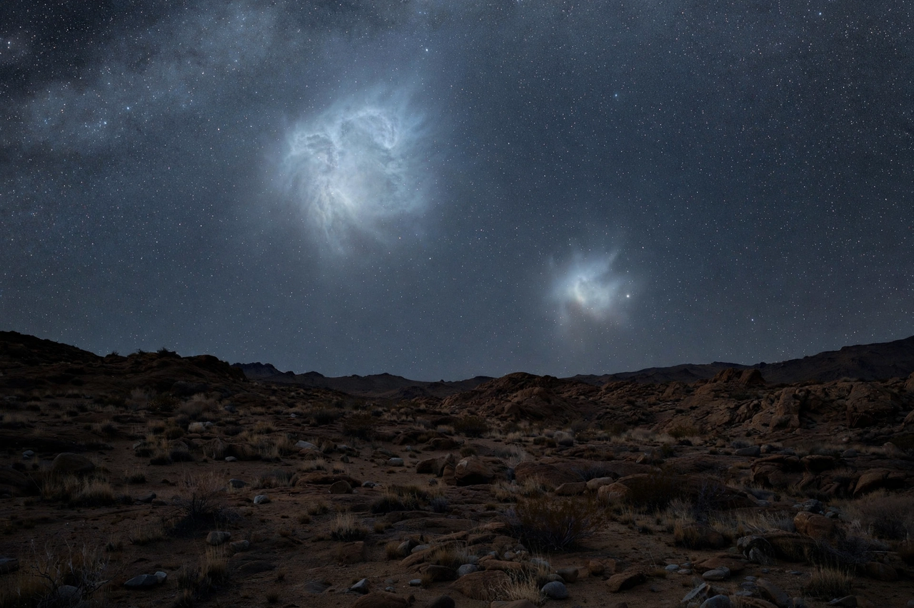

From Wikipedia, the free encyclopedia
| Magellanic Clouds | |
|---|---|
 | |
| Type | Irregular dwarf galaxies (satellites of the Milky Way) |
| Members | Large Magellanic Cloud (LMC); Small Magellanic Cloud (SMC) |
| Distance | LMC ≈ 163,000 ly; SMC ≈ 200,000 ly |
| Visibility | Naked eye, Southern Hemisphere |
The Magellanic Clouds (Nubeculae Magellani) are two irregular dwarf galaxies in the sky visible from the Southern Hemisphere. They are members of the Local Group and are orbiting the Milky Way galaxy. They are named after the Portuguese explorer Ferdinand Magellan, whose crew reported them during the first circumnavigation of the world (1519–1522), though they were known to Indigenous peoples and earlier navigators long before.
The Large Magellanic Cloud (LMC) lies about 163,000 light-years away in the constellations Dorado and Mensa. It is roughly 14,000 light-years across and contains some 30 billion stars. It hosts the Tarantula Nebula (30 Doradus), the most active star-forming region in the Local Group, and was the site of Supernova 1987A, the nearest observed supernova of the telescopic age. The LMC's distance makes it a crucial rung in the cosmic distance ladder; Henrietta Swan Leavitt discovered the Cepheid period–luminosity relation using stars in the Clouds.
The Small Magellanic Cloud (SMC, NGC 292) lies about 200,000 light-years away in the constellation Tucana. It is a dwarf irregular galaxy about 7,000 light-years across, containing several hundred million stars. The SMC is connected to the LMC by a bridge of gas and stars, and a long stream of neutral hydrogen — the Magellanic Stream — trails behind both galaxies, torn out by their gravitational interaction with each other and with the Milky Way.
Measurements from the Gaia spacecraft indicate the LMC is massive enough — perhaps a tenth the mass of the Milky Way — to warp the Milky Way's own halo of dark matter. The LMC appears to be on its first passage around the Milky Way and is expected to collide and merge with it in roughly 2.4 billion years, well before the anticipated merger with the Andromeda Galaxy.